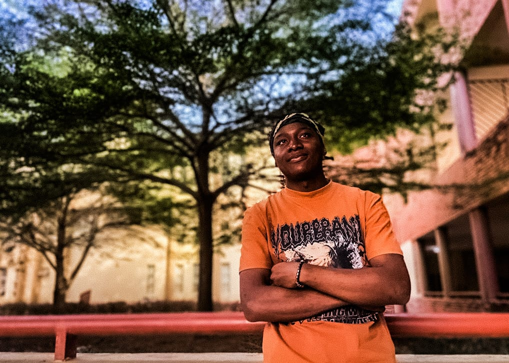

Web Developer • Programmer • Creative Builder
| Full Name | Ajibola Othniel |
| State of Origin | Akure state |
| Local Government Area | Ikere Ekiti |
| Current Location | Minna |
| University | Federal University of Technology, Minna |
| Department | Computer Science |
| Level | 100 Level |
| Matric number | 2025/1/102539CT |
| Inioluwadamian@gmail.com | |
| Phone | 07026024251 |
| Date of Birth | 11th April |
Hi there! My name's Ajibola Othniel, I'm 20 years old. I'm into web designing and funnel building; I dabble in drawing and music a little too. I'm jovial and I take an interest in learning about new things.
Noble Kiddies Nursery and Primary School
Aquinas college
Federal University of Technology, Minna – Computer Science (100 Level)
Created and redesigned multiple Shopify stores focused on UX improvements and conversion optimization.
Created digital graphics, banners, social media assets using modern design tools.
Built clean, mobile-first websites using semantic HTML and advanced CSS.
Explored introductory mobile application ideas and prototypes.